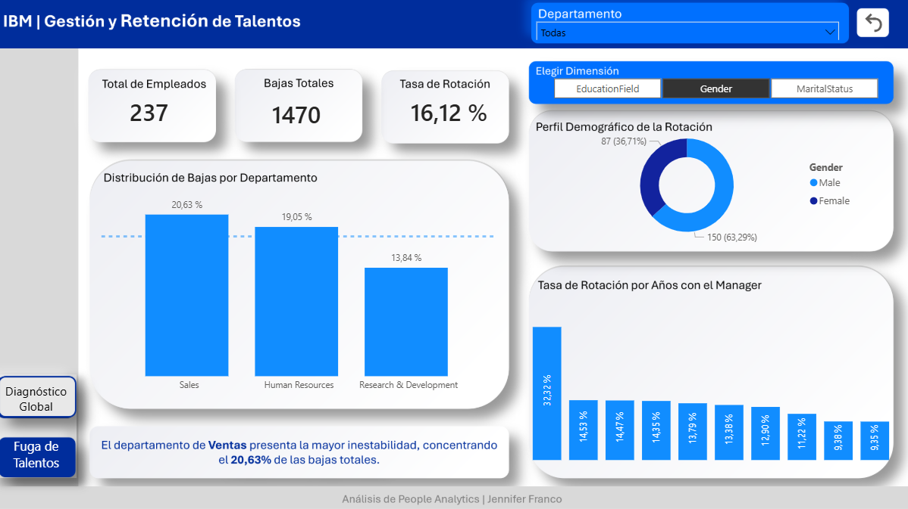
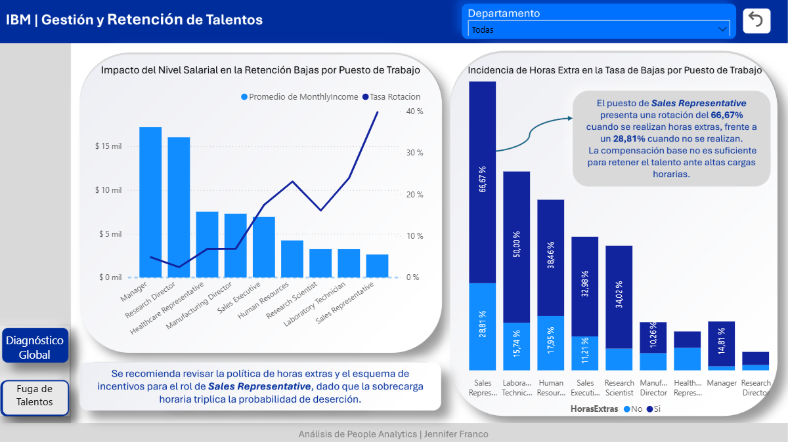
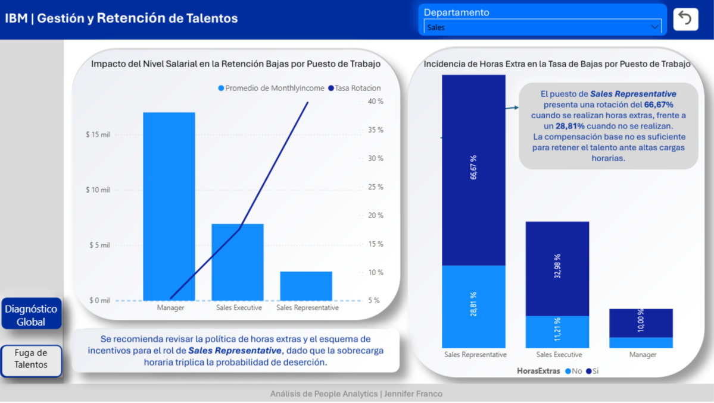
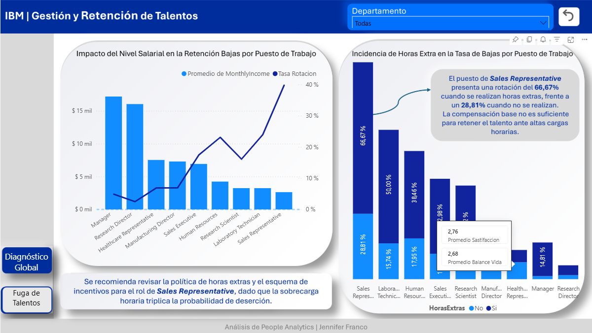

Análisis de People Analytics: Factores Críticos en la Retención de Talento
Este reporte detalla el proceso de transformación de datos y los hallazgos estratégicos obtenidos tras el análisis del dataset de IBM, con el fin de optimizar la toma de decisiones en el área de Capital Humano
Exploración Visual del Dataset
Este dashboard interactivo fue diseñado para ofrecer una navegación intuitiva y
una exploración profunda de los datos. Mediante el uso de botones de navegación por páginas y filtros
cruzados, el usuario puede transitar desde un diagnóstico macro de la compañía hasta un análisis
detallado de factores críticos.
La interfaz permite segmentar dinámicamente cada indicador por variables demográficas y roles
específicos, facilitando el descubrimiento de patrones de rotación que quedarían ocultos en un reporte
estático.
Diagnóstico General

Vista macro de la demografía organizacional. Este panel permite desglosar la rotación (16,12%) según dimensiones clave como el nivel educativo, género, estado civil y estabilidad bajo el mismo manager. El análisis inicial identifica al departamento de Ventas como el área de mayor riesgo (20,63% de bajas), estableciendo el punto de partida para una investigación segmentada.
El Núcleo del Problema (Factores de Salida)

Identificación de disparidades críticas: el análisis revela una correlación inversa entre el salario promedio y la rotación. El rol de Sales Representative no solo percibe los ingresos más bajos, sino que presenta la mayor vulnerabilidad, especialmente cuando se combina con la incidencia de horas extras, que actúa como el principal catalizador de desvinculaciones.
Aplicación de Filtros Cruzados (Zoom en Ventas)

Análisis de filtros cruzados aplicado al sector de Ventas. Los datos revelan que la fuga de talentos no es uniforme: los roles operativos (Sales Representatives) tienen una rotación drásticamente superior a los cargos directivos. Esto permite a la empresa optimizar el presupuesto de retención, aplicando ajustes salariales o incentivos específicamente donde el costo de reemplazar personal es más alto.
Detalle de Factores Críticos (Satisfacción y Balance)

Cruce de variables cualitativas y cuantitativas. El dashboard integra métricas de Satisfacción Laboral y Balance Vida-Trabajo que fluctúan según el rol seleccionado. Al visualizar estos indicadores junto a la sobrecarga horaria, se localiza el 'punto de quiebre' donde el desgaste personal impacta directamente en la decisión de abandonar la compañía.
Principales Métricas de Rotación
Tasa Crítica
66.7%Máximo de rotación en Sales (Año 0-2).
Puesto Crítico
Sales RepPosición con mayor vulnerabilidad salarial.
Detonante Principal
OvertimeIncidencia directa de horas extra en la fuga.
Estabilidad
+5 AñosPunto de equilibrio en la retención por manager.
Insights Claves
El Departamento y Puesto Crítico: El área de Sales (Ventas) es la más afectada, pero el análisis detectó que el puesto de Sales Representative es el foco de fuga más severo de toda la compañía, con tasas de rotación que duplican a otros roles.
El Factor Salarial: Se identificó una correlación directa entre los salarios más bajos de la escala y la intención de salida. Los empleados en posiciones de entrada, especialmente en Ventas, perciben ingresos que están por debajo del promedio de retención, lo que incentiva la fuga hacia la competencia.
Horas Extra: La incidencia de Overtime actúa como el acelerador final. Los Sales Representatives con sueldos bajos y altas cargas de horas extra son la población de mayor riesgo de burnout y renuncia inmediata.
Relación con el Management: La falta de estabilidad salarial y la sobrecarga horaria se agravan en los primeros 2 años de gestión de nuevos líderes, donde la rotación alcanza su punto máximo.
Desarrollo Técnico del Dashboard
Para este proyecto, no solo analicé los datos, sino que diseñé una interfaz de usuario (UI) funcional dentro de Power BI:
- Optimización de Datos:Transformamevariables críticas a formato binario (como BAJAS_NUM y GENDER_NUM con 1 y 0). Esto permitió cálculos de DAX más precisos y un rendimiento superior del reporte.
- Estructura del Dashboard: Se organizó en dos
páginas estratégicas:
- Diagnóstico General: Radiografía de la distribución demográfica y salarial.
- Fuga de Talentos: El núcleo del análisis, donde identificamos los motivos reales de salida.
- Lógica DAX Avanzada: Creé medidas que responden a los filtros cruzados, manteniendo la estabilidad del eje X incluso en muestras pequeñas como RRHH.
- Diseño UX: Configuré tooltips personalizados y una paleta de colores de alto contraste para facilitar la lectura de los puntos críticos de fuga de talento. Diseñe el lienzo en PowerPoint para lograr una estética personalizada, limpia y profesional.
Propuesta Estratégica
Basado en la evidencia, la recomendación para la gerencia es:
- Revisión Salarial en Ventas: Ajustar los sueldos base de los Sales Representatives para alinearlos con el mercado y reducir la dependencia de comisiones variables que generan inestabilidad.
- Reducción de Horas Extras: Implementar un límite estricto de Overtime en el área comercial.
- Acompañamiento Temprano: Monitorear de cerca los primeros 24 meses de los empleados en este puesto crítico para intervenir antes de que se produzca la renuncia.
Conclusión
Este dashboard demuestra que la rotación no es un misterio, sino una consecuencia de factores medibles. Al unir Recursos Humanos con Análisis de Datos, logramos identificar exactamente quién se va (Sales Representatives), por qué (Sueldo y Horas Extra) y cómo evitarlo.